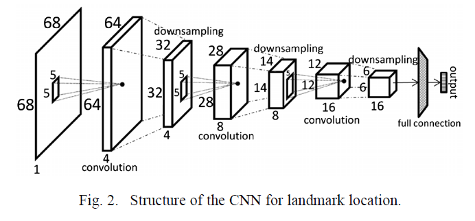
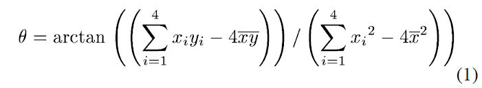
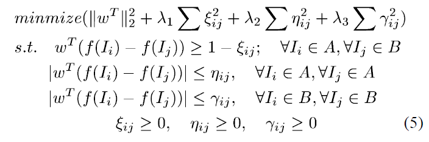
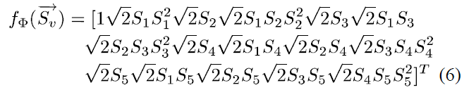
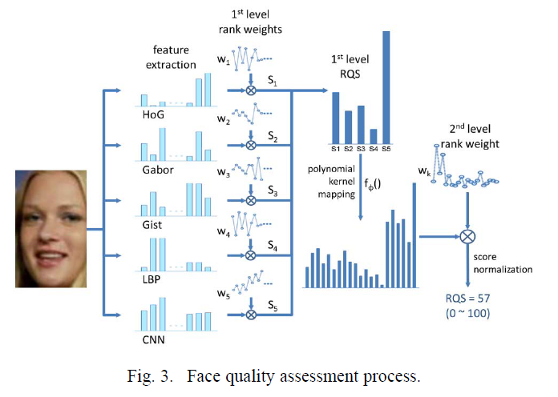
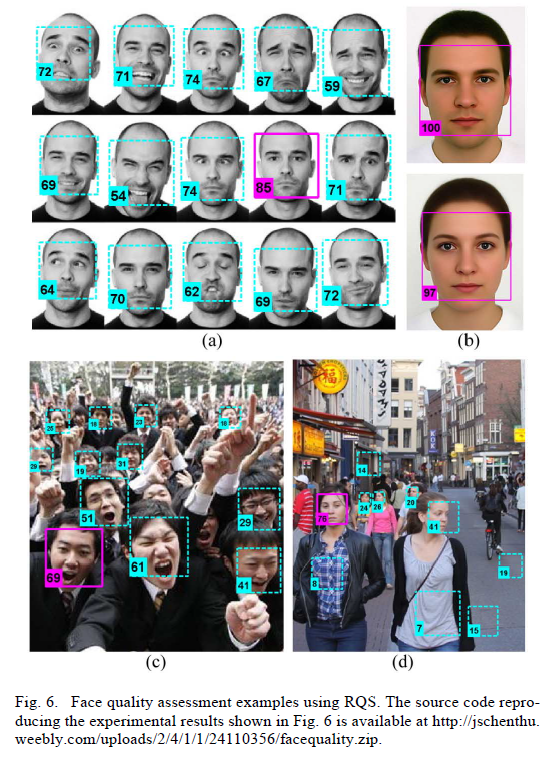

1. 摘要
人脸图像质量是人脸识别准确性的重要影响因素之一。在实际识别系统中通常会抓取到不同场景下的多张人脸，从多张人脸图像中选择一张高质量图像去识别对提高系统的性能是非常有用的策略。本文提出了一种基于 learning to rank 的框架去评估人脸图像质量。这种方法很简单，并且能够自适应不同的识别方法。实验结果证明了它在提高人脸检测及识别的鲁棒性上非常有效。
关键字：人脸质量，人脸识别，learing to rank
1.1. 介绍
对个人身份验证来说，人脸被普遍认为是一种理想的生物识别特征，因为它是普遍的、有区别的、非侵入式的并且容易获取。在过去的二十年，自动人脸识别技术吸引了大量的关注，不管是学术界还是工业界，提出了很多基于人脸图像的人脸识别 (identifying) 和身份认证 (verifying) 方法。然而，人脸识别仍是一项富有挑战性的任务，因为在自然环境下采集的人脸图像会由于光照、姿态、遮挡、表情的不同产生不同的图像。这些问题在实际的应用程序中会由于不配合的用户以及不可控的环境造成非常严重的影响。虽然很多提出了很多方法来提高人脸识别的鲁棒性去对抗不同质量的人脸图像，但普遍认为人脸识别还是在高质量人脸图像上表现出更好的性能。
1.2. 人脸标准化
仅仅位于人脸内部的像素点应该用来评估人脸质量。这可以实现，比如，通过定位人脸轮廓的标志点，图像中的每张脸可以产生一个特殊的标注。然而，这很耗时，并且由于不规则的轮廓，对后面的特征提取造成很大的困难。另一方面，许多人脸检测器简单的输出方形包围框，这明显偏离了人脸的轮廓，并且涵盖了大量的非人脸信息。此外，面部旋转也应该作为质量评估的影响因素之一，因为很多人脸识别系统都能够处理。基于上述所有的考虑，本文提出了人脸标准化过程，见 Fig.1.
Fig.1(a) 展示了人脸检测的结果，该人脸来自 LFW 人脸数据集。然后将检测到的人脸区域调整到 $68\times68$ 像素，输入一个 CNN 网络来获取标志点位置。本文用眼角和嘴角，因为这些点可以清晰的标注，并且涵盖的区域包含了人脸的大部分区域。Fig.2 展示了 CNN 的网络结构，它包含了三个卷积层以及三个降采样层，卷积核是 $5\times5$，输出是标志点坐标。本文从 LFW 数据集中随机选择了 10000 幅图像用来训练，剩下的用来测试。在测试集上，标志点的位置偏差平均是 1.4 个像素。Fig.1(b) 显示了标注的标志点。

为了标准化人脸区域，并且消除旋转的影响，本文首先计算中心点 $C$ 以及用 linear time algorithm 方法得到的涵盖所有标志点的最小的圆的半径 $r$。然后以点 $C$ 为中心取一个大小为 $2.4r\times4r$ 的矩形 $R$ (见图Fig.1(c))。显然所有的标志点都包含在 $R$ 中。设四个眼角的坐标是 $[x_i, y_i], (i = 1,2,3,4)$，矩形的方向由公式 $(1)$ 决定，这样矩形 $R$ 的宽平行于四个眼角构成的直线。Fig.1(d) 中的标准脸就可以由矩形区域 $R$ 围绕 $C$ 旋转 $\theta$ 角得到。

其中 $\overline{x}$ 和 $\overline{y}$ 分别表示水平和垂直方向的均值。
更多的 LFW 图像的标准化结果如图 Fig.1(e)(f)(g)，可以看到标准化的脸更紧凑，并确保包含了人脸的主要部分。标准化过后的脸之后被用于人脸质量评估的输入。这个标准化方法对于一些不准确的标志点来说是有点健壮的。然而，当出现多个标志点位置不准确的情况，标准化的结果可能会恶化，并导致人脸质量评估的结果效果很差。然而这个问题是可以容忍的，因为这大多数情况下，这种情况确实表明人脸图像的质量很低。
1.3. 人脸质量评价
一般很难精确的定义量化人脸图像质量。在过去的研究中，解决此问题主要有两种方案。第一种是利用面部的一些特性，比如分辨率、姿态角度、或者光照参数，利用这些去量化人脸图像质量；另一种是选择一张“标准脸”，用人脸图像与这张“标准脸”的差异来度量人脸质量。这两种方法都比较僵化，缺乏适用性，因为它们都没有考虑人脸识别方法可能带来的差异。比如有一种人脸识别算法适用于解决遮挡问题，那么 Fig.1(g) 可能比 Fig.1(f) 表现的更好。相反的，有一种人脸识别算法适用于解决姿态问题，则 Fig.1(f) 具有更高的图像质量。因此，要以相对的方式去考虑人脸图像质量。对大多数人脸识别方法，考虑图像质量，Fig.1(d) 比 Fig.1(f) 要好，但是比 Fig.1(e) 要差。
基于上述的考虑，本文提出了一种基于 learning to rank 的简单的、灵活的人脸图像质量评价方法。假设有一种人脸识别方法在两个不同的数据集 $A$ 和 $B$ 中测试，且识别的性能在 $A$ 上表现比 $B$ 好。这表明，对这种人脸识别方法，$A$ 中的图像比 $B$ 中的有更高的质量。我们标记这为 $A\succ B$，设 $I_i$ 和 $I_j$ 分别表示 $A$ 和 $B$ 中的一幅图像，$f()$ 表示将提取图像特征向量的函数，定义一种线性结构的质量评价函数 $S(I) = \omega^{T}f(I)$，目标就是求权重 $\omega$ 的值，使得其满足方程 $(2)$ 的约束。同时，在同一个人脸数据集中的图像应该具有相同的质量，这通过方程 $(3)\;(4)$ 来约束，本文称 $S(I)$ 的值为图像 $I$ 的 $RQS(Rank \; based \; Quality \; Score)$。
$$\omega^{T}f(I_i) > \omega^{T}f(I_j);\quad \forall{I_i}\in{A},\;\forall{I_j}\in{B}{\quad\quad}{\text{(2)}}$$
$$\omega^{T}f(I_i) = \omega^{T}f(I_j);\quad \forall{I_i}\in{A},\;\forall{I_j}\in{A}{\quad\quad}{\text{(3)}}$$
$$\omega^{T}f(I_i) = \omega^{T}f(I_j);\quad \forall{I_i}\in{B},\;\forall{I_j}\in{B}{\quad\quad}{\text{(4)}}$$
上述问题规划与文献 [23] 中的相同，因此可以转化为一个凸规划问题（见公式(5)），通过引入非负松弛变量 ${\lambda_1},\,{\lambda_2},\,{\lambda_3}$ 来平衡相关约束，由公式 (5) 定义的优化问题可以用 Newton 方法有效的解决。

本文提出的公式可以扩展至多数据集、多特征。对于多特征融合，采用两层学习策略。假设从图像 $I$ 中提取了 $m$ 个不同的特征，设与第 $i$ 个特征相关的质量评价函数为 $S_i(I)={\omega^T}f_i(I),\;{(i=1,2,\cdots,m)}$。在第一层学习中，所有的排序权重 $\omega_i$ 通过公式(5)学习到，设 $\vec{S_v} = {[{S_1(I)};{S_2(I)}\;\cdots\;{S_m(I)}]}^T$ 为包含第一层学习张由图像 $I$ 所有特征得到的 $RQS$ 的列向量。定义第二层 质量评估函数为 ${S_k(I)} = {\omegak}{f{\Phi}(\vec{Sv})}$，其中 $f{\Phi}()$ 为多项式核函数。本文中 $m=5$ 并且多项式核函数为二阶多项式核函数。$f_{\Phi}(\vec{S_v})$ 的表达式为公式(6)。

$\omega_k$ 的值可以通过二次训练得到，$S_k(I)$ 的值归一化到 $0~100$ 之间，并用来图像 $I$ 的最终得分。Fig.3 展示了计算 Fig.1(d) 的 $RQS$ 的计算过程。

1.4. 实验
本文实验结果展示如图Fig.6。
